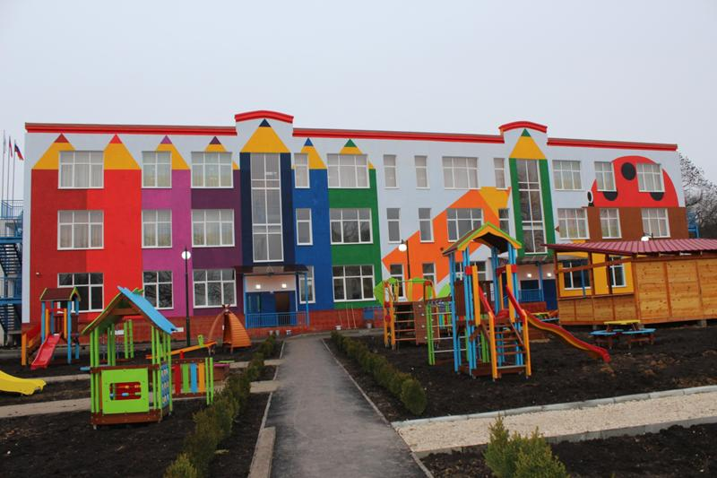
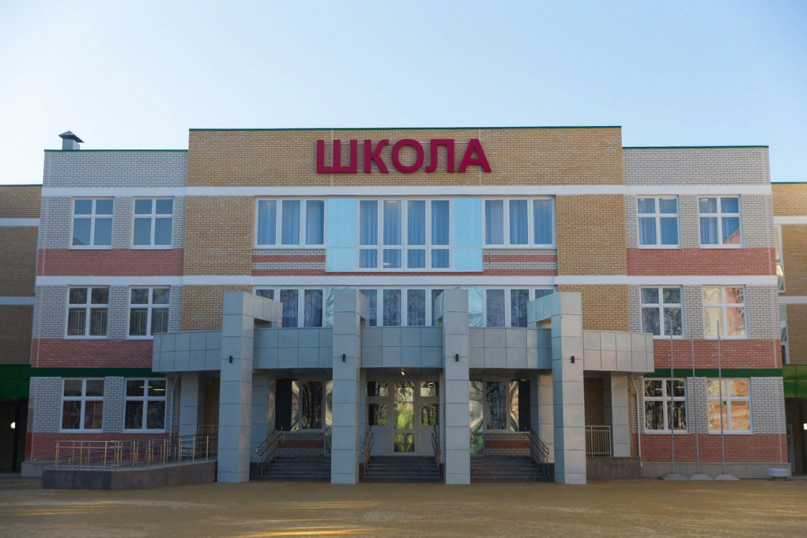
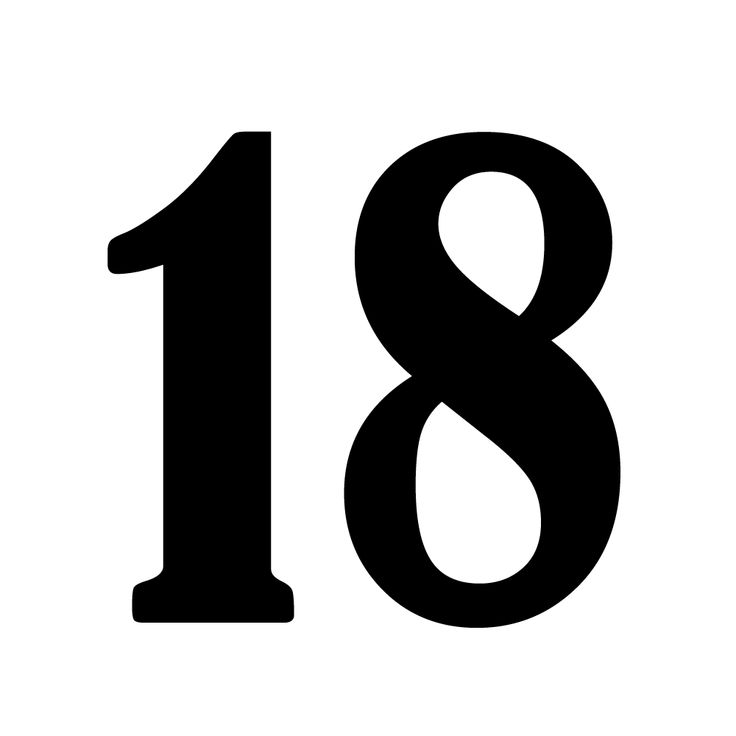
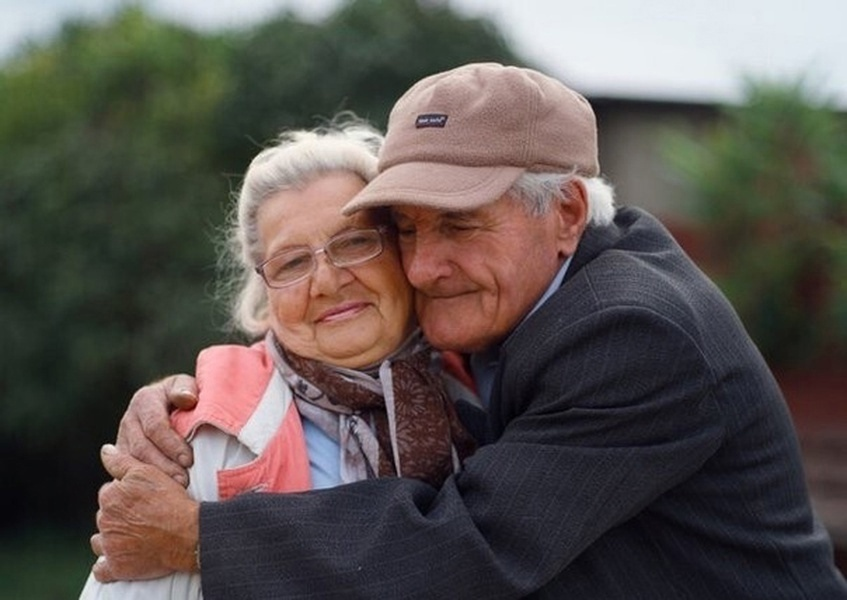
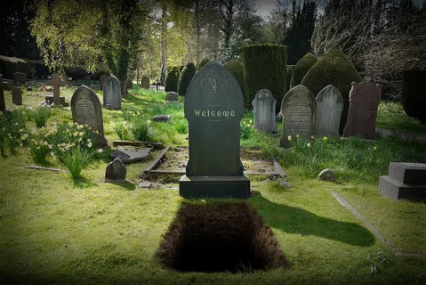
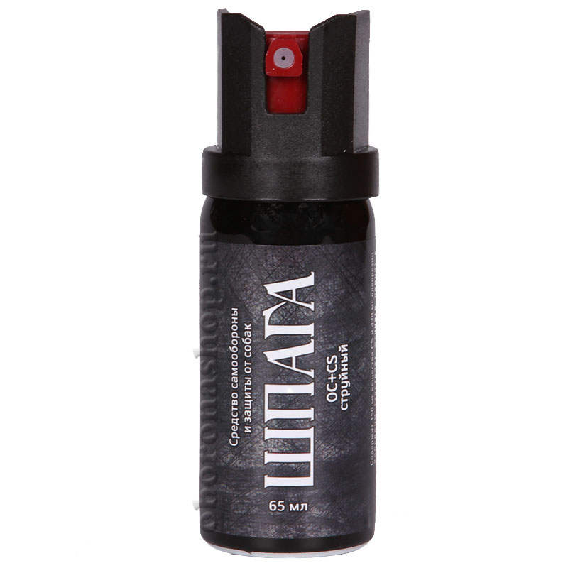
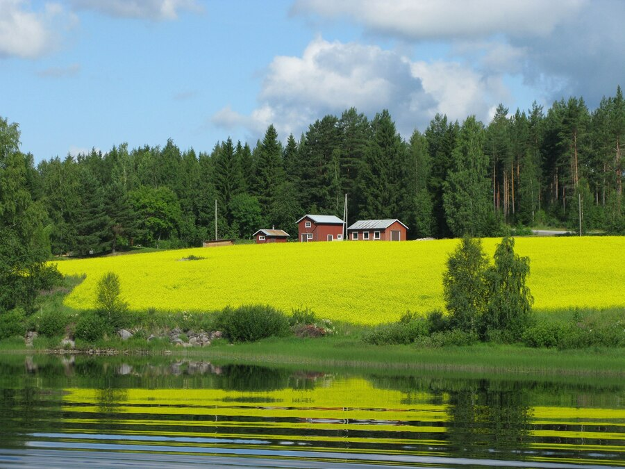
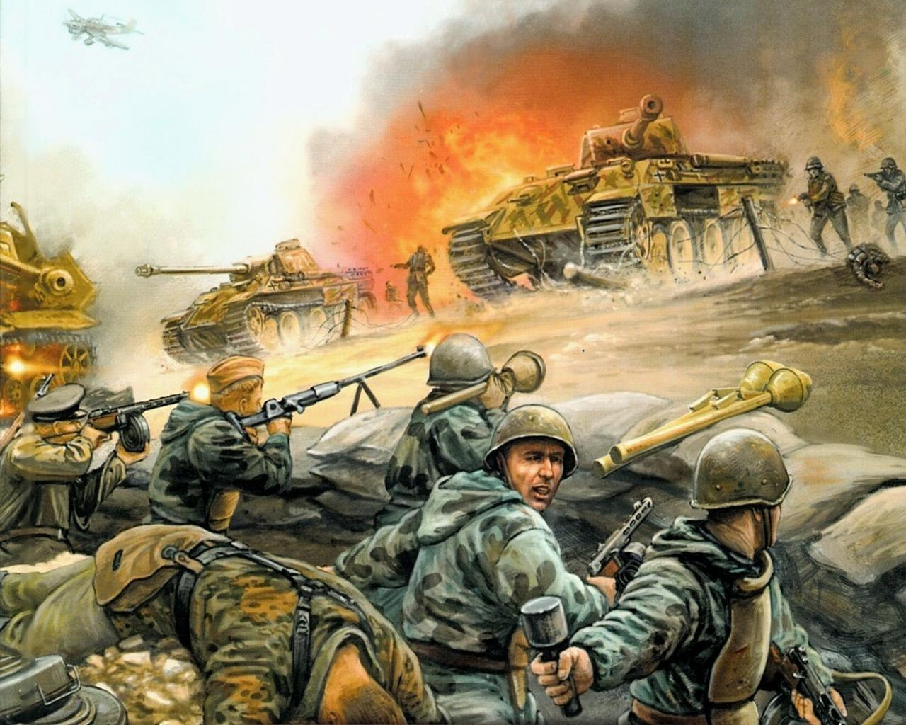
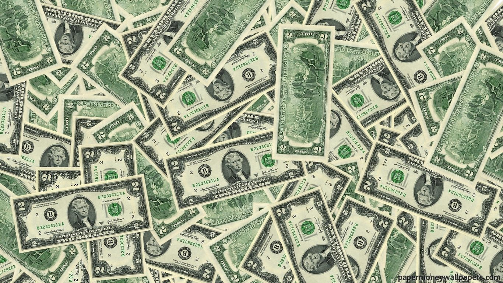

В игре есть 5 уровней сложности но многим известно только 3: "easy=лёгкий", "normal=средний", "xard=сложный". Но есть ещё два, А именно "madness=безумие и pain=боль". Уровень сложности случайный зависит от страны семьи и инвалидности. Например ты родился в России в богатой семье, но в какой-нибудь деревни где плохая медицина сложность будет normal
При появление нам рандомно дают характеристики, инвалидность, статы. Со времене мы получим скилы как разговаривать и ходить чем раньше мы их получим тем облегчённой будет игра
Садик это локация так скажем обучение перед школой но о ней позже. В садике есть npc воспитатель он может наказать и поставить в угол, также в садике есть своё расписание сон, еда, отдых, прогулка в садике несколько групп локация скучная и не долгая.
Школа одна из самых опасных локаций в ней уже больше npc также как и игроков. 1 npc это учитель он учит ученика скилам которыми обычно никто не пользуется. 2 npc завуч что-то вроде директора только ниже никаких особенностей не имеет. Последний npc директор почти главный босс. Главный босс это ЕГЭ его никак невозможно убить ему всё ровно оно зоставит тебя вспомнить таблицу менделеева и корни в математике.
Когда вы наиграете уже 18 лет то вы станете как это называют совершеннолетним но что оно даёт локаций нет что делать? А дальше ждёт ад вместо школы работа котороя зависит от сдачи ЕГЭ и оценок теперь можно пить и курить что я осуждаю. Теперь будет доступен новый предмет водительские права и нет это не паспорт. Машина служит для более быстрого перемещения по карте что упрощает геймплэй. P.S Многие спросят почему я не написал про университет смысл если это что-то вроде школы.
Это последний этап на нём игроку даётся много положительных и отрицательных бонус "Положительные" 1.Не ходить на работу 2.Получаешь валюту бесплатно её называют пенсия. "Отрицательные" 1.Боль тела также при изменениях погодных условиях также слух и зрение.
В нашей игре есть очевидно конец. Он может наступить в любой момент и этот конец называется "смерть". Мы можем закончить игру в случаях: покончив с собой, смерти от болезни, от старости, от любого вида оружия и так далее.
В нашей игре есть 2 типа оружия: огнестрел и холодное оружие. К огнестрелу относится травматический пистолет и боевой, а к холодному оружию: нож и бита. За их использование вы можете отправится в локацию "Тюрьма". Но ести оружие с которым вы не попадёте в тюрьму это перцовый болончик он оглушает противника и даёт время скрыться.
На карте игры есть локация деревня в ней много мобов и суровый климат. К климату относится палящие солнце контрится панамкой. А к мобам относится мухи, осы, пчёлы и другие контрятся спреем. На локации есть бесплатная провизия летом. Занятий тут много и есть дискотеки другие игроки тут могут предстовлять угрозу. В их домах могут хранится огестрельное оружие.
В нашей игре есть ивенты. Один из них это война. Обычно этот ивент начинается из-за не хватки ресурсов или территории. Что нужно чтобы попасть на ивент: быть здоровым, быть парнем не младше 16-18 лет, не иметь хронические заболевания.
Деньги это валюта в нашей игре. За неё мы покупаем: одежду, еду, жильё, и так далее. Их можно получать за квесты и не только. Деньги можно положить на банковскую карту. Но не только деньгами можно заплатить. Для оплаты используют разные предметы.
Вверх